Shadow Mapping
Introduction
Shadow-mapping is a common technique for providing real time shadows to a 3D scene. It works by rendering a depth map texture from the light source's point of view. Then, when shading a pixel of a 3D model its depth value is compared to the depth map and is shaded darker if it is in shadow or lighter if it is lit by the light.
Shadows add to the perceptual realism of a scene and makes it easier to judge the relative positions of objects.
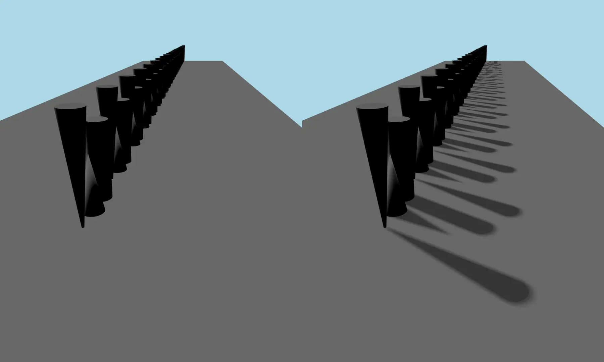
Notice how in the left scene in the image it is impossible to tell how far from the plane the objects are but in the right scene the shadows makes this easy.
Qt provides support for shadow mapping for all our three light types, DirectionalLight, PointLight and SpotLight. To activate shadows in your scene you need to first set the light to cast shadows by setting castsShadow to true. You can then control which Model's will cast and receive shadows by setting the castsShadows and receivesShadows to true or false.
Directional Lights
The directional light emits light in one direction from an unidentifiable source located infinitely far away. This is similar to the way sunlight works in real life. A directional light has infinite range and does not diminish.
Cascaded Shadow Maps
One problem with a DirectionalLight is that it renders the whole scene from the point of view of the light. This can lead to blocky looking shadows when the size of the shadowmap is not adequate. One option to get better rendering quality is to use Cascaded Shadow Maps (CSM). Qt supports a version of CSM called Parallell Split Shadow Maps (PSSM). PSSM works by splitting the view frustum into several parts and rendering a shadowmap for each part.
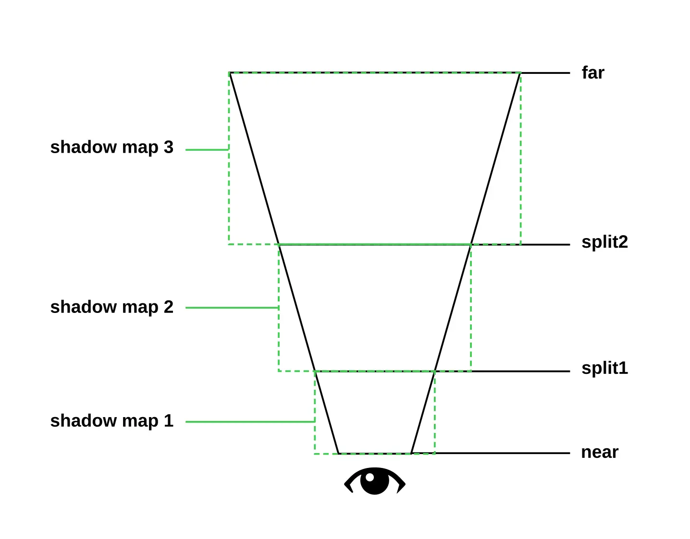
This picture shows an abstract image of a view frustum with PSSM splits. It has two splits ending up in three cascades.
This way you can get better shadowmap resolution closer to the camera where the visual quality is more noticeable and lower resolution further from the camera where the visual quality is less noticeable.
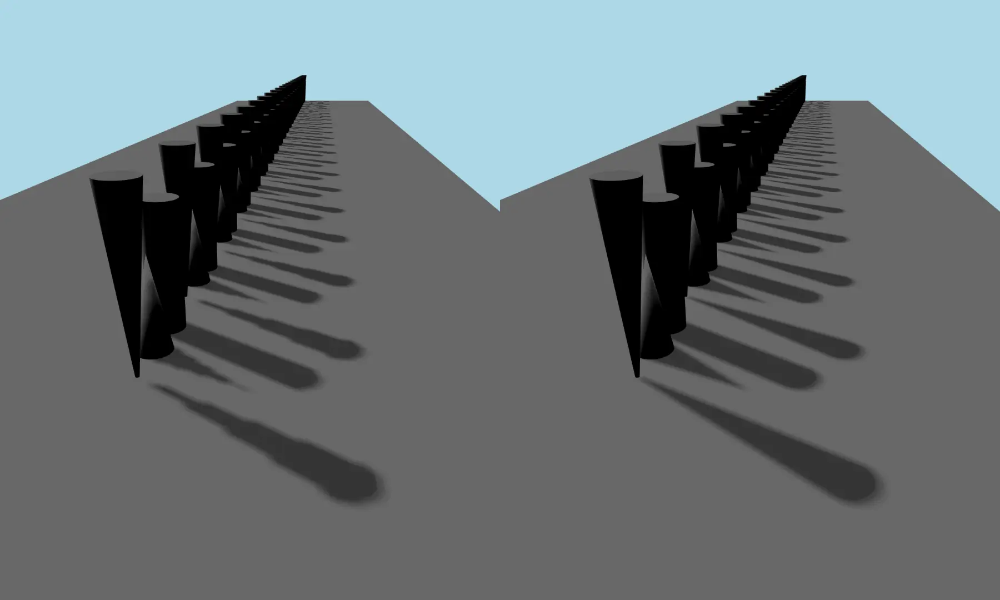
The above picture shows a shadowmap without any splits (left) and a shadowmap with 3 splits (right).
You can control the number of cascade splits by the csmNumSplits property and where the splits are by the csmSplit1, csmSplit2 and csmSplit3 properties. To get nice looking transitions between the splits you can specify a certain amount of blending between them with the csmBlendRatio property.
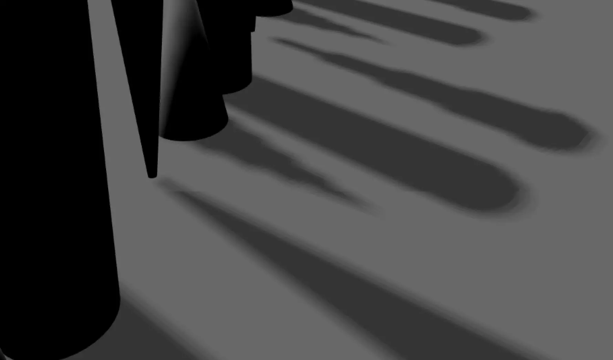
The above picture shows a zoomed in view of a cascade seam with no blending active.
Keep in mind that for every split you add the application has to render another shadowmap which will affect performance negatively. The size of the blend area will affect performance so keep it as small as possible.
Point Light
The PointLight can be described as a sphere, emitting light with equal strength in all directions from the center of the light up to a given radius. This is similar to the way a light bulb emits light.
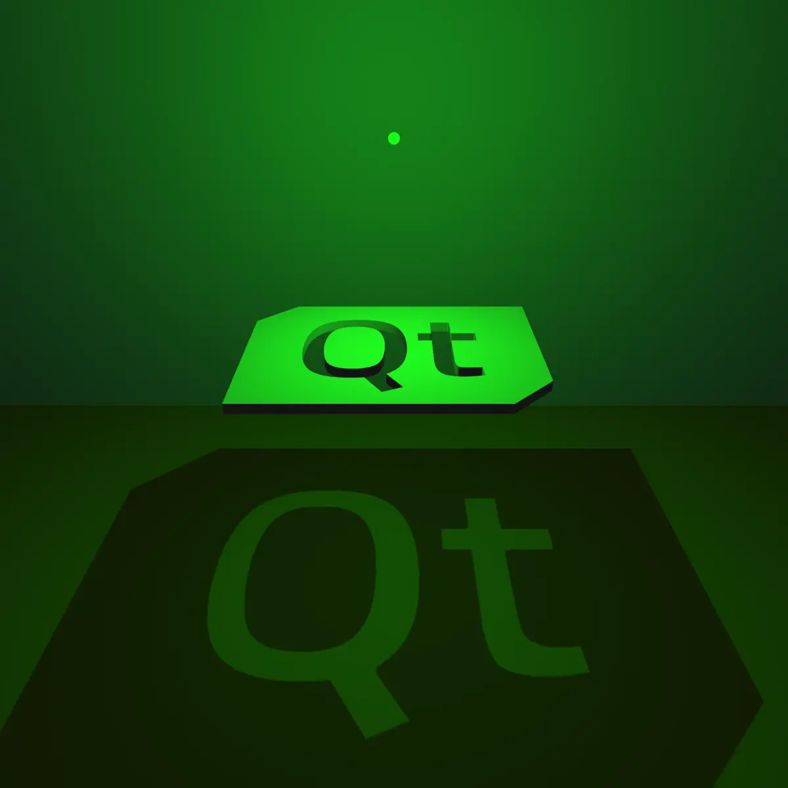
The PointLight renders its shadowmap into a cubemap which means that is does six render passes. This can be quite computationally expensive.
Spot Light
The SpotLight emits light towards one direction in a cone shape, which is defined by the coneAngle property. The light intensity diminishes when approaching the coneAngle. The angle at which the light intensity starts to diminish is defined by innerConeAngle. This is similar to how a flashlight or a spot-light emits light.
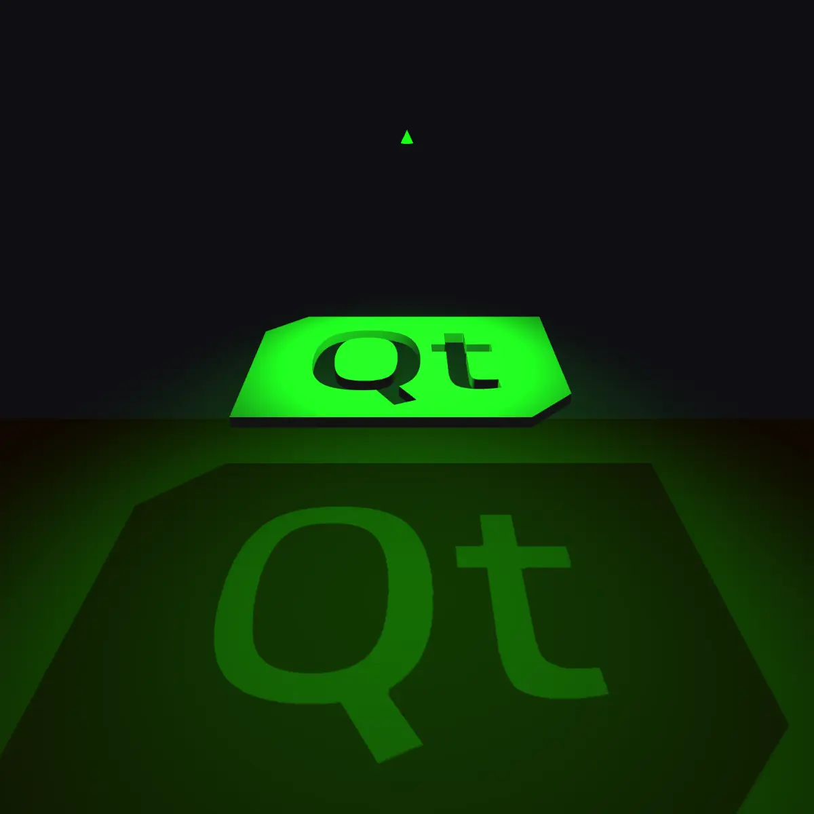
Unlike the PointLight, the SpotLight renders its shadowmap into a single depth map.
Performance and scene tweaking
While Qt tries to provide sensible default values for the properties related to shadowmapping there is usually some need to tweak them to fit the specific scene. Especially if you have a scene that is much smaller or bigger than what is expected. The following section will go into more detail of how you can tweak the values to make the shadow map look good while still maintaining as good performance as possible.
Shadow bias
Shadow bias is a way to remove so-called shadow-acne which are false shadows that typically appear in certain patterns. Shadow bias offsets the shadow map depth texture in a way that shadows appear further from the shadowing object and this often fixes the shadow-acne. The draw back is that if you have too much shadow bias then you can get an effect called peter panning where the shadow is too far away from the shadowing object. It is also possible to reduce shadow acne by increasing the shadowmap resolution.
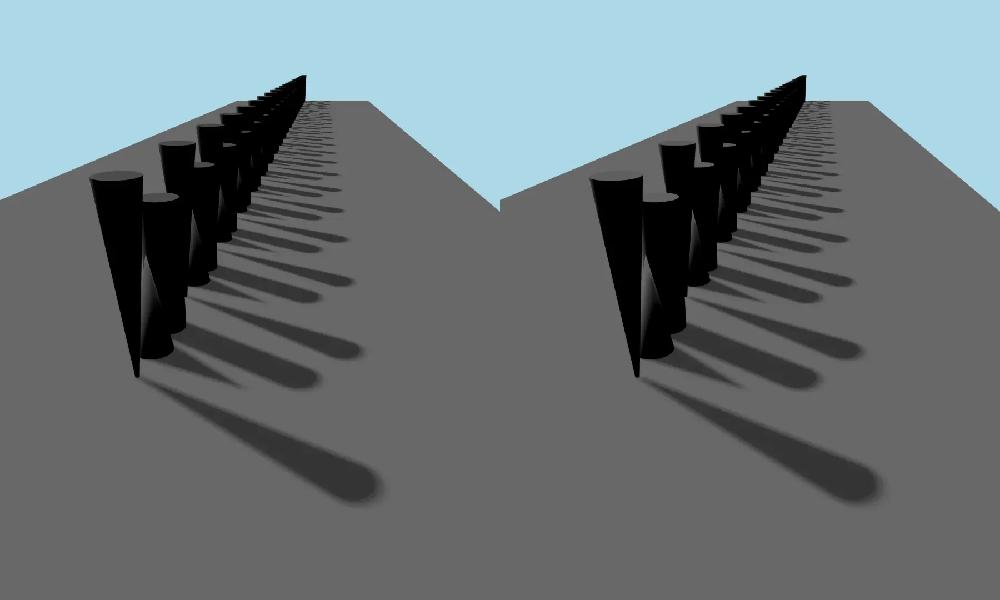
The above image shows a scene with 0 shadow bias (left) vs 10 shadow bias (right). The left scene has some false shadows on the top of the cones and cylinders.
Shadowmap resolution
The resolution/quality of the shadowmap is controlled by the shadowMapQuality property. A higher shadowmap quality decreases the blockiness of the shadows but is more expensive to render so set it as low as possible while still maintaining the needed visual quality.
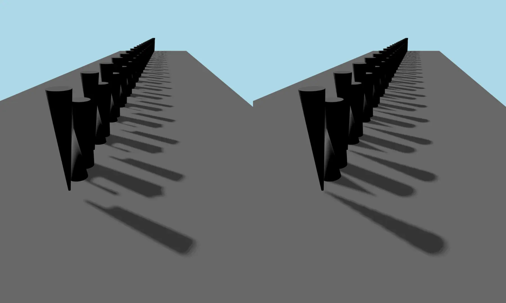
The above image shows a scene with a low shadowmap resolution vs a high shadowmap resolution.
Soft shadows quality
Soft shadows are a way to approximate the way shadows look in real life where they fade from being harder to softer at the edges. The soft shadow quality is controlled by the softShadowQuality property. It supports hard shadows with no softness as well as percentage-close filtering (PCF) soft shadows of varying quality. The hard shadows are the cheapest to render and PCF gets more and more expensive the higher quality it is. To control the radius of the soft shadow use the pcfFactor property. The value of pcfFactor does not impact the rendering speed but the higher it is the higher the soft shadow quality needs to be to look good.
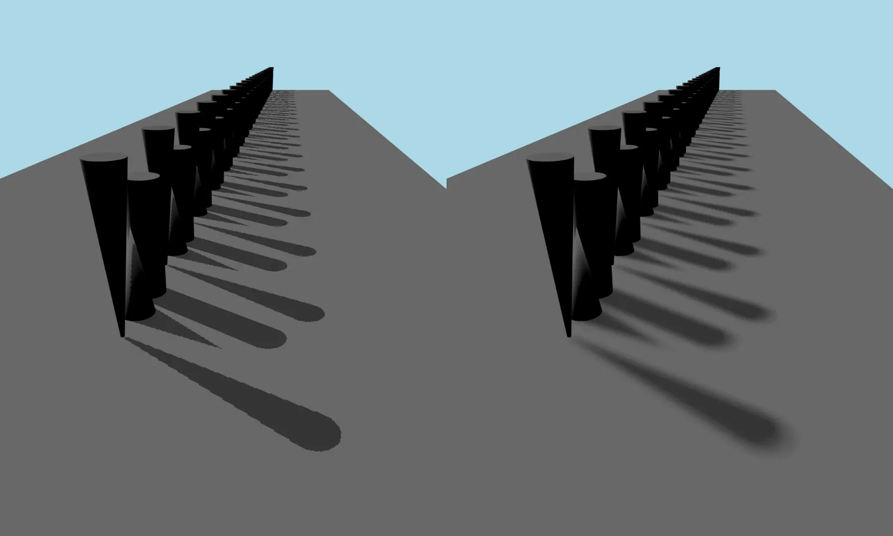
The above image shows a scene with a softShadowQuality Light.Hard shadow on the left and a scene with a softShadowQuality Light.PCF32 and pcfRadius 10 on the right.
Shadowmap far distance
The property shadowMapFar can be used to control the maximum distance of the shadow map. This property works slightly different for PointLight and SpotLight vs DirectionalLight.
For PointLight/SpotLight it determines how big the bounding box of the rendered shadow should be, but for the DirectionalLight it defines how far from the scene's camera the shadow map should cover in the scene.
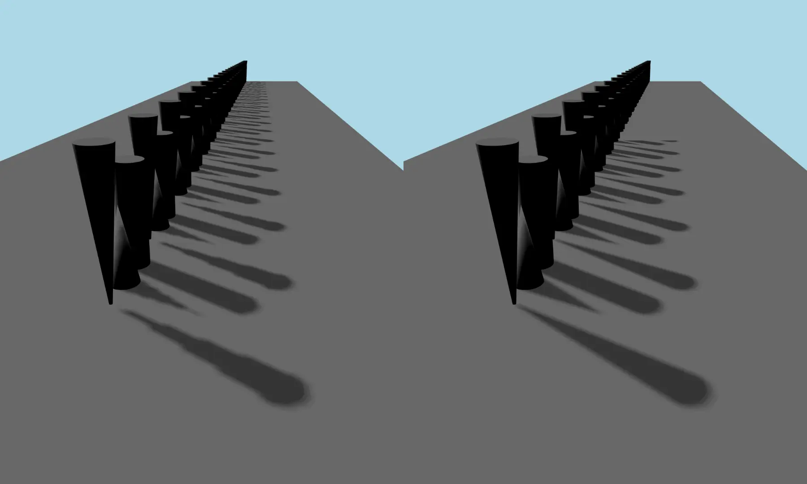
The above image shows the same scene with the same directional light but two different values for shadowMapFar.
Shadowmap bit depth
There are certain scenarios where you have a very big scene causing the shadowmap to cover a big area in its depth axis. For instance if you have many objects far away from the camera view that are still casting shadows and need to be part of the shadow map bounds. What can happen in this case is that even with a higher {Light::}{shadowBias} the scene still has banding artifacts. One way of fixing this is by using 32-bit depth on the shadowmap. Setting the property {Light::}{use32BitShadowmap} to true will enable this on the specific light.
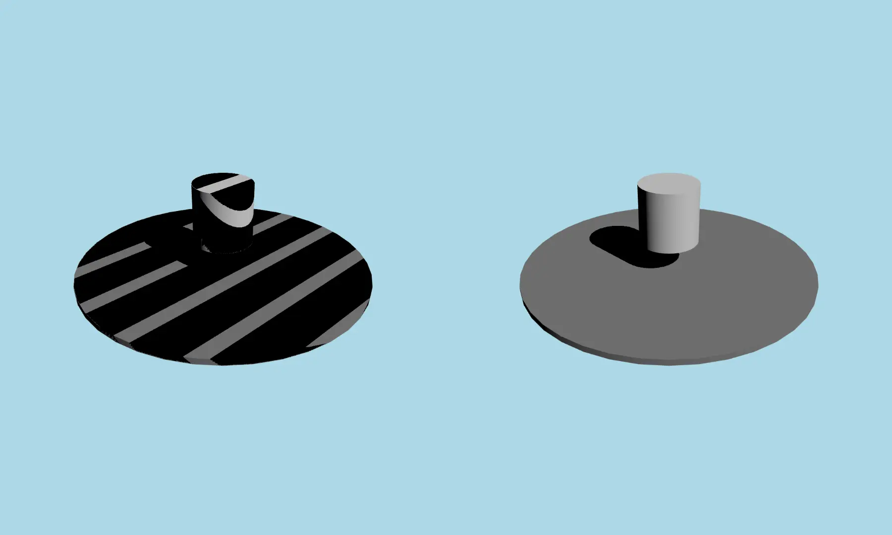
The above image shows the same scene with the same directional light but one using a 32-bit shadowmap and the other using a 16-bit shadowmap.
See also Using Image-Based Lighting, Lightmaps and Global Illumination, and Qt Quick 3D - Cascaded Shadow Maps Example.